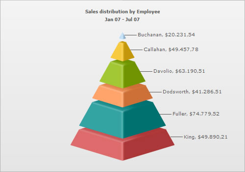

Number Formatting > Using formatted input numbers |
In some countries, commas are used as decimal separators and dots as thousand separators. But, if you directly specify such numbers in FusionWidgets XML, it will give an error while converting to number. FusionWidgets v3 introduces a smart way to let you specify numbers in your own format in XML. Consider the XML below (for a pyramid chart): |
| <chart caption='Sales distribution by Employee' subCaption='Jan 07 - Jul 07' numberPrefix='$' isSliced='1' inThousandSeparator='.' inDecimalSeparator=','> <set label='Buchanan' value='20.231,54' /> <set label='Callahan' value='49.457,78' /> <set label='Davolio' value='63.190,51' /> <set label='Dodsworth' value='41.286,51' /> <set label='Fuller' value='74.779,52' /> <set label='King' value='49.890,21' /> </chart> |
In this XML, we're providing the numbers in the non-standard convention - i.e., we've used dot as the thousand separator and comma as the decimal separator (as followed in some European countries). Now, to make sure that FusionWidgets reads these numbers in the right way, we convey our input decimal and thousand separator characters as under: <chart ... inThousandSeparator='.' inDecimalSeparator=',' ..> This tells FusionWidgets that it should treat dot in the input numbers as thousands (instead of normal decimals) and comma as decimals. When you now view this chart, you'll get the following output: |
| You can see that FusionWidgets has interpreted the numbers properly and automatically converted the numbers into the standard format. If you want to output the number again in the non-conventional format, you can use the following XML: |
| <chart caption='Sales distribution by Employee' subCaption='Jan 07 - Jul 07' numberPrefix='$' isSliced='1' inThousandSeparator='.' inDecimalSeparator=',' thousandSeparator='.' decimalSeparator=','formatNumberScale='0'> <set label='Buchanan' value='20.231,54' /> <set label='Callahan' value='49.457,78' /> <set label='Davolio' value='63.190,51' /> <set label='Dodsworth' value='41.286,51' /> <set label='Fuller' value='74.779,52' /> <set label='King' value='49.890,21' /> </chart> |
| You will get the following chart: |
|  |
| Notice how . is used for thousand separator and , for decimal separator. |